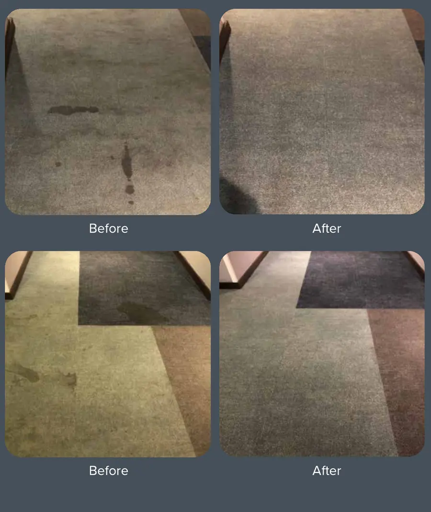

Mudah untuk bermula
Kami periksa dahulu, anda tentukan kemudian.
Keadaan karpet, anggaran keluasan, akses dan tahap kotoran dinilai sebelum cadangan kerja serta harga disediakan.
01 Kongsi lokasi02 Tetapkan lawatan03 Terima sebut harga
Cucian karpet profesional dengan pemeriksaan tapak percuma, skop kerja yang jelas dan jadual yang menghormati waktu ibadah.
Mudah untuk bermula
Keadaan karpet, anggaran keluasan, akses dan tahap kotoran dinilai sebelum cadangan kerja serta harga disediakan.
Servis kami
Setiap lokasi mempunyai trafik, jenis karpet dan keperluan operasi yang berbeza. Sebab itu kami menilai tapak sebelum menentukan kaedah, tempoh dan kos.
Cucian untuk ruang solat utama dan kawasan berkarpet dengan penggunaan harian yang tinggi.
Minta penilaianJadual kerja disesuaikan dengan operasi bangunan, program dan waktu solat.
Minta penilaianPilihan cucian sekali atau berkala untuk ruang pembelajaran dan ibadah.
Minta penilaianKenapa perlu diberi perhatian
Cucian yang dirancang membantu mengurus habuk, bau, kesan tumpahan dan rupa kusam—sambil menjaga keselesaan jemaah serta imej ruang ibadah.
Habuk dan kotoran yang terkumpul
Bau hapak atau kurang menyenangkan
Kesan tumpahan dan tompokan setempat
Karpet kelihatan kusam akibat trafik tinggi
Proses yang mudah
Empat langkah jelas supaya pihak pengurusan tahu apa yang berlaku sebelum sebarang komitmen dibuat.
Beritahu nama premis, lokasi dan tarikh lawatan yang diutamakan.
Kami menilai keadaan, keluasan, akses, noda dan pengudaraan.
Skop, kaedah, tempoh dan sebut harga dikemukakan dengan jelas.
Tarikh kerja disusun mengikut waktu solat dan operasi premis.

Rekod pengalaman
Dokumentasi sebelum dan selepas membantu pelanggan menilai keadaan awal serta hasil cucian secara lebih jelas.
Dipaparkan sebagai pengalaman kerja berkaitan. Maklumat tarikh, keluasan dan nilai projek tidak dinyatakan dalam rekod asal.
Bincang Keperluan PremisKenapa cucikarpetmasjid.com
Komunikasi dan jadual kerja mengambil kira waktu solat serta aktiviti premis.
Harga dan kaedah dicadangkan selepas keadaan sebenar dinilai.
Jadual susulan boleh dirancang mengikut trafik jemaah dan bajet.
Soalan lazim
Tidak jumpa jawapan? Hantar permohonan ringkas dan kami akan semak keperluan premis anda.
Tanya kami →Harga bergantung pada keluasan, keadaan karpet, jenis kotoran, akses, keperluan jadual dan skop tambahan. Sebut harga diberikan selepas pemeriksaan tapak atau maklumat yang mencukupi diterima.
Ya, untuk kawasan perkhidmatan yang diliputi dan tertakluk kepada pengesahan lokasi serta jadual. Nyatakan lokasi penuh ketika menghubungi kami.
Tempoh bergantung pada keluasan, tahap kotoran, bilangan ruang dan akses. Anggaran akan dimaklumkan selepas pemeriksaan.
Kerja boleh dijadualkan di luar waktu solat atau dibuat secara berfasa, tertakluk kepada susun atur dan persetujuan pihak premis.
Masa pengeringan berubah mengikut ketebalan karpet, kelembapan, aliran udara dan cuaca. Ruang hanya wajar digunakan semula selepas karpet benar-benar kering.
Tidak semua noda boleh dijamin hilang sepenuhnya. Hasil bergantung pada bahan, usia noda dan rawatan terdahulu. Jangkaan hasil akan diterangkan selepas pemeriksaan.
Kekerapan bergantung pada trafik jemaah, habuk persekitaran, pengudaraan dan kejadian tumpahan. kami boleh mencadangkan jadual selepas menilai premis.
Lawatan tapak percuma
Lengkapkan borang ringkas ini. Kami akan menyemak lokasi, keadaan dan keperluan jadual sebelum menghubungi anda untuk pengesahan.
“Bersih. Segar. Selesa untuk Beribadah.”